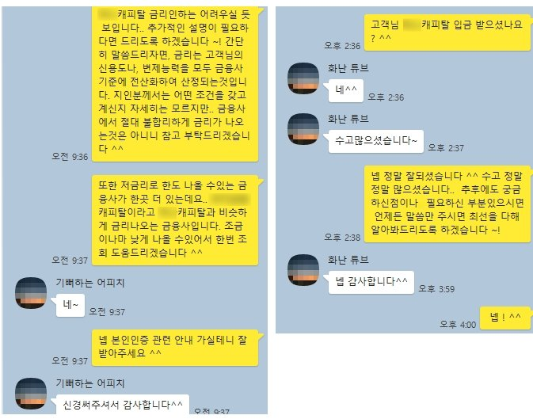

★기존대출 5400만원 보유 주부님 캐피탈 6000만원 승인사례★
안녕하세요 ^^
오늘은 기존대출 5400만원 보유 주부고객님의 캐피탈 6000만원 승인사례를 소개해드리도록 하겠습니다 ~!
고객님께서는 현재 소득이 없으신 주부님이셨고, KB캐피탈에 3800만+1600만 가량의 대출을 갖고계셨습니다 ~!
당시 고객님의 신용점수는 800점 전후이셨으며, 배우자분과 공동명의의 아파트를 소유하고 계셨습니다.
아파트는 평택위치, 시세는 KB시세기준 3억 8800만원이었으며,
자택에 담보대출은 은행권 2억1000만원 설정이 되어있으셨습니다.
고객님께서는 기존대출중 금리가 높은 부분을 대환하면서,
추가자금을 최대한 알아보시기 위해 저희 뱅크앤론으로 문의를 주셨습니다 ~!
기존대출 금액이 많으셨지만, 신용점수가 좋은편이시고..
자택을 소유하신 부분에서 캐피탈권에서 취급하는 무설정아파트론 상품을 알아봐드릴 수있을듯하여,
캐피탈권으로 조회를 한 결과 H캐피탈에서 6000만원, 13.6%의 한도가 나오셨습니다 ^^
물론 무설정아파트론인만큼 자택에 설정은 잡히지 않으시며,
금리또한 높지 않은편으로 받아가실 수있으시게 되었습니다 ^^
고객님께서는 만족해하셨고, 84개월로 전액신청을 도움드린 결과 상담신청 이틀안에 금액을 승인받으셨습니다 ~!
카페 회원님들께서도 50%이상 지분의 자택을 소유하신 분이라면,
무설정아파트론으로 한도 조회해보시길 바랍니다 ^^
아래는 저와 고객님의 대화내용입니다. 참고 부탁드립니다 ~^^
감사합니다.
